Åtta olika ljus.
Samma landskap.
Varm kväll, klar sommardag, rosig gryning, midnattssol, blå timmen, oväder, dis och höst. Veckefjärden i samma kameravinkel, med samma frysta molnklocka.
Målad: målad vegetation och mark, med samma atmosfär som realistisk.
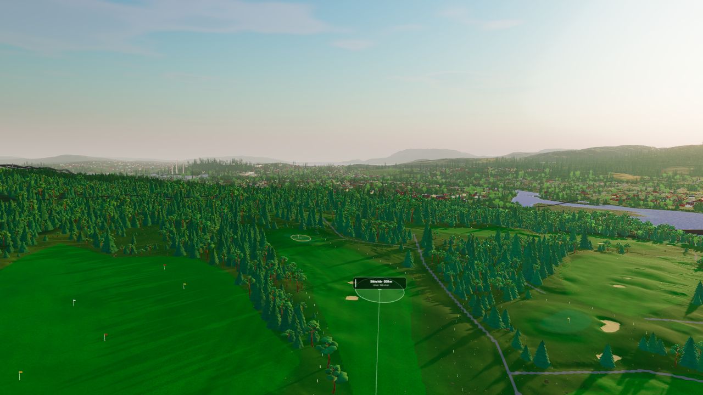
Kväll
Honungsljus, långa skuggor och varm kvällshorisont.
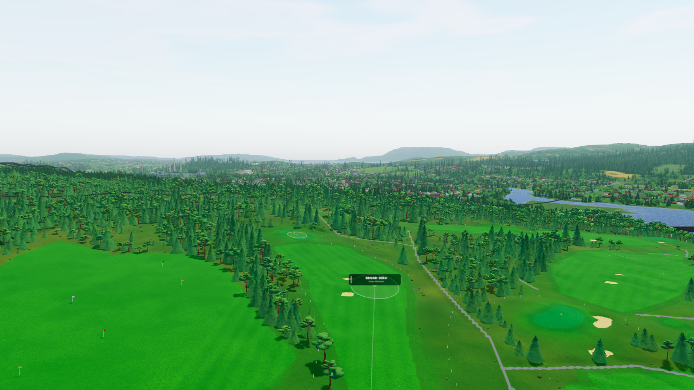
Dag
Klar svensk sommardag med vita moln och frisk grönska.
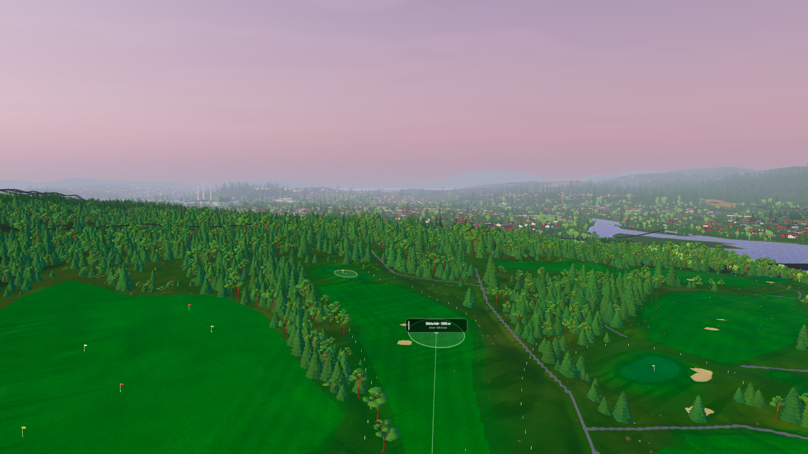
Gryning
Pärlemor, rosig horisont och mjukt ljus över morgondiset.
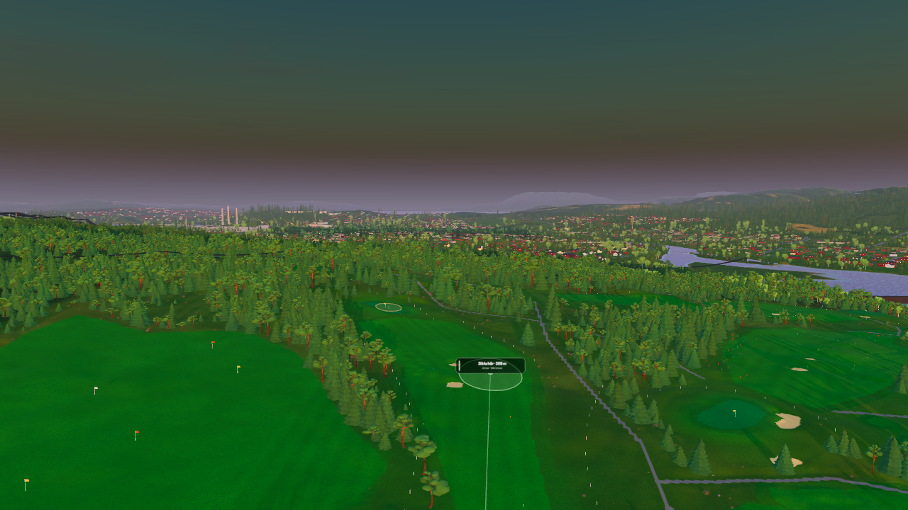
Midnattssol
Aprikos vid horisonten och ljust nordiskt sommarljus över banan.
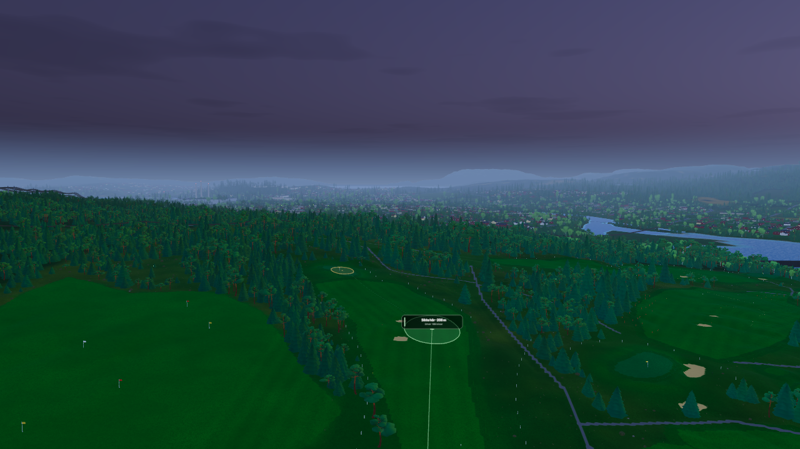
Blå timmen
Kobolt och lavendel efter solnedgången, med läsbar terräng.
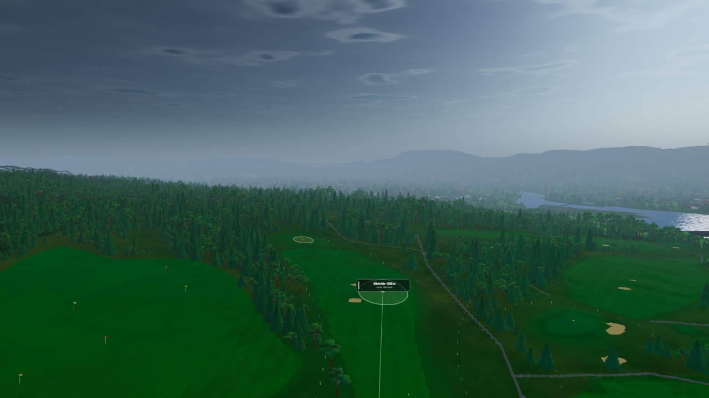
Oväder
Tunga skiffermoln, kall regndis och dämpat ljus under fronten.
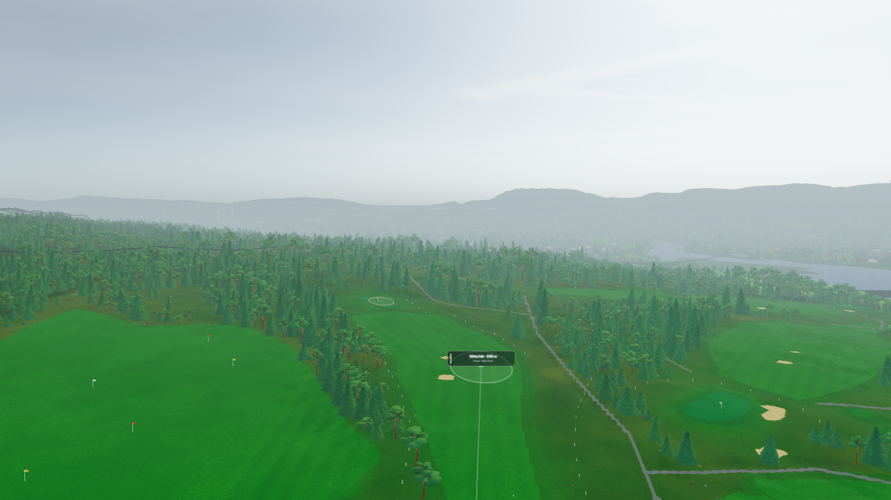
Dis
Silverljus och mjuka landskapslager i tät, stilla dis.
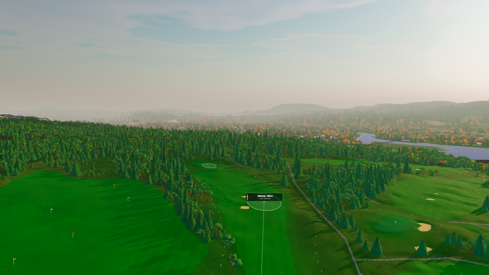
Höst
Bärnstensljus och gyllene löv mot en kylig oktoberhimmel.
Dimma med djup
De avlägsna bergen blev tidigare nästan helt ersatta av en ljus dimfärg. Nu behåller åsarna en del av skogens färg och skuggning. Gryning och dis får fortfarande mjuka avstånd, men bergssidorna blir inte vita silhuetter.
Gryning · hål 13
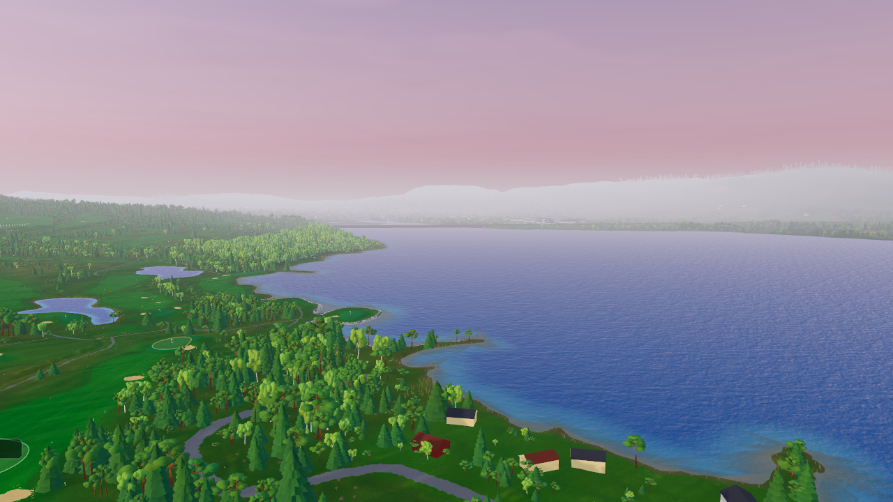
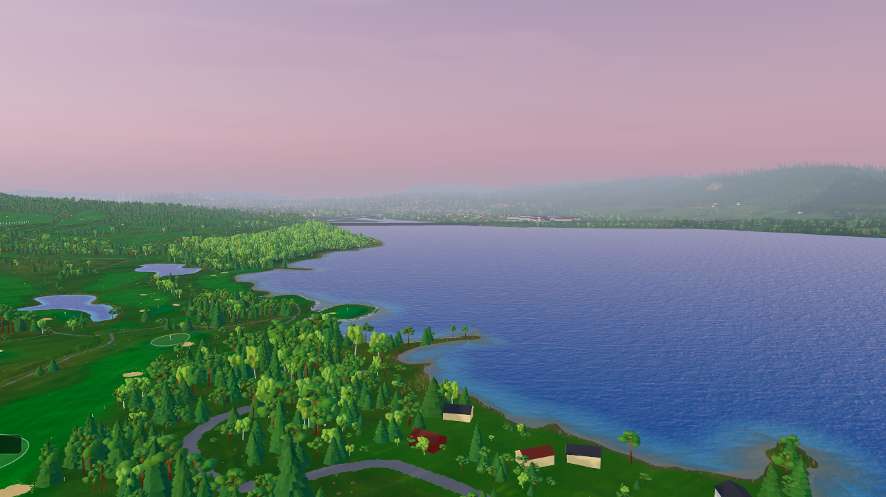
Dis · hål 13
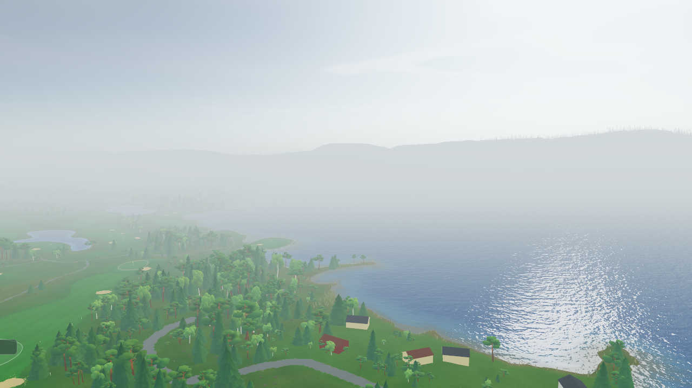
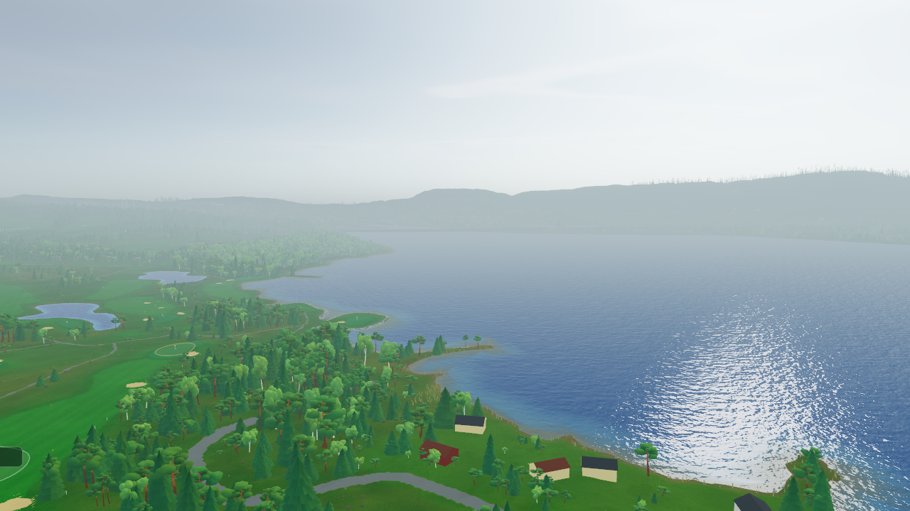
427/427 renderingskontroller godkända. Samma himmel i båda stilarna; moln, terräng, skuggor, djup och återanvändning av reflektioner kontrollerade.
MätresultatTeknisk genomgång